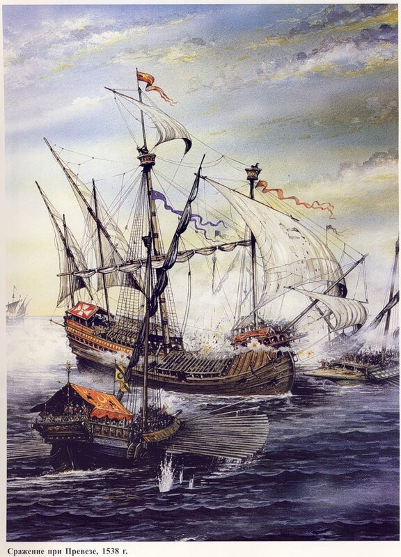

Итак, мы остановились в описании событий при Превезе 1538 года на середине дня 28 сентября, когда на море спустился полный штиль. Галеры ушли навстречу турецкому флоту, а галеоны остались недвижимыми из-за отсутствия ветра. Безветрие было абсолютным на правом фланге христианского флота, у самого берега. Мы уже упоминали, что на этом фланге боевого ордера флота Священной лиги находилась эскадра парусных кораблей из Венеции. На флагманском галеоне – Galeone Di Venezia – флаг держал Алессандро Кондулмиеро (Alessandro Condulmiero). Этот галеон, гордость парусного флота Венеции, находившийся в четырех милях от побережья и в десяти милях от острова Сессола, едва смог сдвинуться с места, несмотря на все поднятые паруса, в том числе лиселя, поставленные на фок- и грот-мачтах. Беспомощное положение флагманского галеона спровоцировало командира левого фланга турок направить отряд галер для его уничтожения.

Кондулмиеро не выказал никакой видимой реакции на этот шаг противника, подпуская турецкие галеры ближе. И когда противник приблизился на дистанцию точного огня, произвел первый бортовой залп. Стреляли картечью. Считается, что из 400 человек погибших и 800 раненых в сражении при Превезе османов большая часть оказалась жертвами огня с венецианского галеона. Казалось, что после таких потерь турецкие галеры вот-вот обратятся в бегство. Ободренный первым успехом, Кондулмиеро решил атаковать все левое крыло турецкого флота, которым командовал Табах-реис. Такое же решение, но против правого крыла турок, предводимого Салех-реисом, принял и командир флагманского корабля на левом фланге флота Лиги Франко Дориа. И основные силы христианского флота ободрились, готовые немедленно вступить в бой, раз уж наступил благоприятный момент, против основных сил Барбароссы. Тем более численное преимущество флота Лиги не оставляло сомнений в победе.
Что же предпринимает Андреа Дориа? На глазах изумленных моряков он уводит свои галеры в открытое море, обогнув беспомощные в штиль парусные корабли своего левого фланга. Мало того, что он вышел из боя, но своим маневром он разрушил весь боевой порядок флота Лиги.
28 сентября 1538 года. 15.00. Штиль.
Барбаросса расценил действия Дориа как намерение совершить глубокий обход его сил с фланга, поэтому не позволил себе расслабиться. Хотя втайне и надеялся, что галеры противника уйдут, не ввязываясь в бой. Поэтому, опасаясь резкими маневрами спровоцировать противника на решительные действия, медленно-медленно стал отгребать к берегу.
Странный маневр адмирала Дориа до глубины души возмутил командиров флота. Командующий папской эскадрой и адмирал венецианского контингента сели на быстроходные шлюпки и направились на флагманский корабль Дориа. Генуэзец принял их в высшей мере надменно, молча выслушал, как адмиралы буквально умоляли его подать сигнал к бою, после чего велел отправляться на свои корабли, где внимательно следить за сигналами флагмана и тщательно выполнять их.
28 сентября 1538 года. 17.00. Свежий зюйд-ост.
Примерно за час до захода солнца неожиданно подул благоприятный для христианской армады зюйд-ост. Парусные корабли смогли начать движение. Ветер был настолько свеж, что галеры под его воздействием могли двигаться в нужном направлении без использования весел и парусов. Уже стали различимы флаги на кораблях противника, одежда и лица турецких моряков.
Но что это? Андреа Дориа, не сказав никому ни слова, без всяких сигналов, вопреки всем правилам военного искусства, против ожиданий всех союзников и противника, поставил паруса, положил руль на левый борт и со всеми своими галерами устремился на Корфу.
28 сентября 1538 года. Заход солнца. Свежий зюйд-ост.
Увидев это позорное и неожиданное бегство командующего, оставившего флот без управления, корабли и галеры флота, венецианцы, испанцы и итальянцы, пришли в замешательство. Затем пришло сообщение, что все корабли должны следовать за штандартом командующего. Однако при постановке парусов и при построении в новый походный ордер корабли сталкивались друг с другом, наваливались один на другой, так что Барбаросса, если бы он захотел, мог бы в этой сумятице захватить их всех. Но старый корсар, видимо, не поддался искушению, предпочитая не рисковать, и дал возможность кораблям противника перестроится в новый ордер. И только убедившись, что никакого подвоха со стороны Дориа нет, Барбаросса, наслаждаясь неожиданным триумфом, двинул свои корабли в погоню за уходящим флотом Священной лиги, ведя по нему огонь из носовых орудий своих галер. Ни одного выстрела в ответ не прозвучало. Дождь и ветер загасили три кормовых фонаря на флагманской галере Андреа Дориа. Этот факт был отмечен во всех без исключения хрониках, хотя интерпретация его была различной. Турецкие историки, естественно, истолковали его как трусливый маневр генуэзского адмирала, не желавшего, чтобы на нем был сосредоточен огонь противника.
Не все корабли из состава флота лиги смогли вовремя перестроиться и занять место в ордере уходящих на Корфу эскадр. Часть из них (около двадцати галер) направилась в Апулию. Те же корабли, которые не смогли пристроиться ни к основным силам, ни к малому отряду, направившемуся в Южную Италию, подверглись нападению османов. Так, папская галера из Анконы под командованием кавалера Джамбаттиста Довизи, получившая повреждение во время неудачного перестроения флота, была атакована двумя турецкими галиотами. Бой продолжался до темноты, погибли почти все члены экипажа. Подоспевшие четыре галеры Драгута решили судьбу моряков и их корабля. Практически на глазах Андреа Дориа турки сорвали папский флаг и заковали в кандалы капитана. Кроме этого, туркам удалось захватить одну галеру венецианцев, еще одну галеру папы и пять испанских парусных кораблей, несмотря на отчаянное сопротивление их экипажей. Было захвачено и сожжено много грузовых парусных судов. Считалось, что и галеон Кондулмиеро, с рассказа о котором мы начали этот пост, также был уничтожен турками. Однако через три дня, обгоревший, продырявленный ядрами во многих местах, оставшийся без грот мачты и почти всего такелажа, он был приведен остатками своего экипажа во главе с капитаном в гавань Корфу.
28 сентября 1538 года. Ночь. Свежий зюйд-ост.
Спустившаяся ночная тьма накрыла эскадры противников, а с ними и позор командующего флотом Священной лиги, не предпринявшего ни единой попытки атаковать своих врагов. О последствиях и уроках этого «сражения» (думаю, кавычки здесь вполне уместны) мы еще поговорим; что же касается выгоды для турок, которые попытались представить этот морской эпизод как свидетельство непобедимости на море флота Османской империи , то судьба посмеялась над этим бахвальством. Не более чем три дня спустя шторм, жестокая бора, разыгравшаяся на Адриатике, разметала галеры Барбароссы, утопив тридцать из них. Так что общий баланс практически сравнялся. А уроки, которые преподала Превеза, думаю, были учтены тридцать лет спустя, в битве при Лепанто.